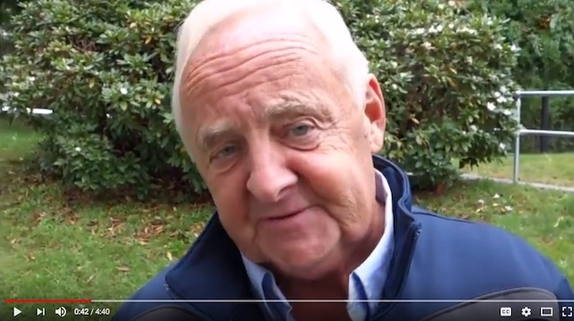
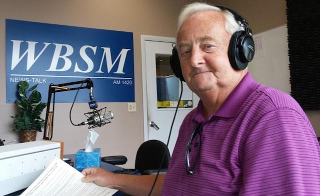

2018-09-20 08:00

Meet E. Michael Janson, New Bedford’s perrennial mayoral candidate.
Janson is 69 years old, a graduate of New Bedford High and, according to his Ballotpedia profile, has worked at some 50-odd jobs and run for mayor nine times.
In 2011 Janson ran for mayor of New Bedford, largely on an anti-immigration platform. In 2013 he ran for New Bedford School Board. In his candidate questionnaire he offered to sacrifice his winters in Florida for the greater good of the citizenry, proposed tracking students, eliminating student “distractions” in classrooms, and fining the parents of students who skipped school.
Janson came in dead last in a pack of seven candidates.
In 2015 Janson ran for an At-Large City Council seat. In a campaign video demonstrating his talent for free-association, Janson objects that New Bedford is a sanctuary city where “illegals” take thousands of jobs away from graduating high school seniors, which in turn causes a dreaded psychological condition: “I call it SSI. Shitty Self Image.” This in turn, he goes on, leads to heroin, and heroin can only be fought by letting the police hire dozens of informants. Again blaming “ousiders,” Janson slams Section 8 housing because it’s filled with “undesirables” who “come into our city, they become lousy tenants, and they’re not preparing their kids for an education, so consequently our schools are suffering because these — they’re not doing a good job of preparing their kids. And it’s not the teacher’s job to do that. My mother used to work with me with flashcards. I doubt anyone here in New Bedford is working with their kids with flashcards.” In 2017 Janson lost another bid for the At-Large City Council seat. Again.
Since about 2007 Janson has had a running battle with the Standard-Times, which infuriated him by calling him a “perennial mayoral candidate” — which (to be fair) his Ballotpedia profile proves that he is. A piece by Jack Spillane in the Standard Times pointed out that Janson was running for his “at-large” seat from an address which was actually a New Bedford garage on Rockdale Avenue without running water. Listing a series of lies and half-truths Janson spouted in the 2007 mayoral race, the Standard Times concluded: “Mike Janson, you’re full of baloney.”

For a long time Janson repaired to the one sanctuary where all whackadoodles go to lick their wounds — talk radio. I won’t mention any names or call numbers, but this New Bedford station (like the White House) is where people full of baloney go to be treated like royalty and inflict their ignorance on the rest of us. Here Janson has found his peeps. A man without any public policy skills, little education, and who could never teach in a public school himself, Janson nevertheless has a talk-radio opinion on everything — immigration, austerity, schools, economic priorities, public housing, foreign trade zones, taxes.
But it’s 2018. Janson may still be full of baloney but it’s time for another campaign. This time he’s challenging Tony Cabral for the Massachusetts House 13th Bristol District. Cabral should have nothing to worry about, but in today’s political climate, no one should ever be complacent.
Rep. Tony Cabral is putting out a call for volunteers to help #TeamCabral on his re-election campaign.
Team Cabral is hosting a Volunteer Organizational Meeting this coming Monday, September 24th, at 6pm, at the GSM Labor Council, 560 Pleasant Street, New Bedford. They will have coffee and doughnuts and will be talking about all the different ways people can get involved.
If you can’t make it to the meeting, but would like to help, please reach out to Team Cabral at reptonycabral@gmail.com and they will figure out how to plug you in!
Take nothing for granted. Elections always matter.